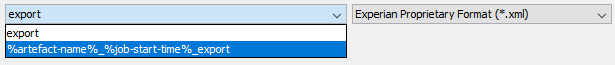

Export/Import
The Export wizard allows a user with read permission to export a component, folder, solution or template. The exported item will be saved in an export.xml file. Any component and/or folder dependencies along with its structure will also be saved in the .xml file.
|
When exporting a template all its revisions will also be saved in the export.xml file. |
|
To export a solution containing a solution property value, such as the DA Null Handling, users must have the Architect functional role as part of their security profile. |
The Import wizard allows a user with the Solution Administrator or Architect functional role as part of their security profile to import an exported item, such as:
- a component, folder or solution into a solution
- a template into a Content Repository
The import functionality can also be used to add pre-configured domains and solutions to a repository, as described in the Explorer overview.
Import and export are available for the repository types: Content, Reporting and Solution. The solution signature and the DA Null Handling property are included in the import and export.
|
Imports of previously exported solutions, folders or components can only be imported into the Solution Repository. If you try to import an export that was created within the Content Repository into the Solution Repository, the following error message will be displayed.
|

The Export job will include all required folder structures from the domain level down to the folder or component to be exported. So, for example, if the user is exporting a single component (such as a scorecard, as in the example below), the export job will include the selected component along with its referenced components, as well as the folders that contain the selected component and the referenced components, all the way up to the solution level (the domain level is not shown in the export view).
When there is a components that has been moved to the Recycle Bin and some of its dependencies are in the solution, both the component from the Recycle Bin and its dependencies will be exported. Components that already exist in the Recycle Bin will be imported back directly to the Recycle Bin.
In this example, the Post-Bureau Risk Scorecard was selected for export:
The Export job finds and includes all components referenced by the selected scorecard. The same is true when exporting a folder; the Export job will include the selected folder and the folders that contain any referenced components.
The Import job will import the identical structure into the new or existing solution. The only difference is that the solution name will be the name of the solution into which the folders and components are being imported. The Import job resolves all references automatically. Import components that do not exist, or that are new in the solution, are checked into the repository as part of the import process. If an import, created by a user without an architect licence, contains components that already exist in the solution, the importing user has the option to overwrite those components in the user area (second option described below) or not overwrite these components and to only import new components (third option described below).
All exports are signed, however an export that has been carried out by a user with an architect licence will be called 'architect signed'.
When an import is carried out on content that has been 'architect signed' and the content contains components that already exist in the solution, a user who has an architect licence and architect security profile will have the option to:
- import all the components into the shared area, overwriting those that already exist (in both the user and shared areas)
- overwrite those components in the user area with the component data contained in the import file. If the user chooses to overwrite, the import job will check out the pre-existing components into the user's user domain and overwrite the user domain versions of the pre-existing components.
- not overwrite those components and to only import new components. Any references to existing components will not be resolved with the pre-existing shared domain components.
When an import is carried out on content that has been 'architect signed' and the content contains a component that already exist in the solution, a user who does not have an architect licence and architect profile will not have any options to choose from. If they decide to continue with the import all the components will be imported into the shared area, overwriting the ones that exist in the shared and user areas.
Signature
The exported document stores the Signature. For information on how to overwrite the Signature value, see the Import wizard topic.
DA Null Handling
The exported document stores the DA Null Handling solution property. For information on how to overwrite the DA Null Handling value, see the Import wizard topic.
Allowed types
The exported document stores lists of allowed types for each folder that is exported (even if no components of that type are exported). When importing, any missing folders are automatically created with the appropriate full list of allowed types.
If a folder already exists, only the required allowed type will be added if missing and required for the purpose of the import.
Licence Credentials
Licence credentials are exported with the components, folders and solutions in the export file.
Whenever a new folder is created on import, as when the original export was created at the solution or folder level, the licence credentials for that folder are read from the export file.
Importing an .xml file which was created from a solution or folder level export will overwrite credentials within an existing folder. However, importing a component level export will not overwrite credentials for components of that type in an existing folder. If a component of a new type is imported into an existing folder (i.e. a component for which credentials have not been declared), the licence credentials for the new component type will be read into the folder.
For legacy export files (those without preset licence credentials), the default licence credentials on import are the same as for any newly created folder.
The user will have the option of updating the licence credentials for existing allowed types.
Publishing rules
The exported document stores all publishing rules for each folder that is exported (even if a folder referenced by a publishing relationship is not itself exported). When importing the solution, any folders which are automatically created have all the associated publishing rules configured for that folder (in all directions).
Publishing rules are also included for any dependent component folders.
When importing, publishing rules are also created, linking any pre-existing folders to the new ones where appropriate. So, if a publishing rule is imported with a folder, it can create a publishing relationship with an existing folder where that publishing relationship did not previously exist.
| Export/Import has functionality in common with the creation and consumption of templates. The main difference is that only users with the Solution Administrator or Architect functional role as part of their security profile will be able to create an Import job, and Import can only be performed at the solution level. |
The Export wizard allows a user to export a component, folder, solution or template. The exported item will be saved in an export.xml file. Any component and/or folder dependencies along with its structure will also be saved in the .xml file.
An exported item can be imported into a solution (for a component, folder or solution) or Content Repository (for a template) using the Import wizard. For more information about the export or import functionality, refer to the Export/Import overview topic.
|
Before exporting a component, folder, solution or template you must have at least read access to the item. Also, the export process will be blocked if a folder or component contains any unreadable dependencies. |
|
When exporting a solution, any template tracking information will also be saved in the export.xml file. The tracking information links the template to the repository that was used to create it. When the template has been consumed in a solution, its tracking information can be viewed in the Consumed Templates window. |
|
|
The signature of your solution is retained during import, when importing into an empty domain. In the Explorer window, right click on the loaded solution and select Add solution signature. The signature that has been assigned to the solution will be displayed in the Add Signature dialog. |
To export a component, folder, solution or template
- In the Explorer window, right click on the component, folder or solution from the Solution Repository, or the template from the Content Repository from which you want to export and then select Export.
- The Select Context screen is the first screen of the Export wizard.
- Optional - if you want to export the content from the shared area, unselect the Include User Area checkbox.
- Optional - if you want to add a version label(s) that has been assigned to a component to the export, select the Include following version labels checkbox. Then use the Arrow button to move the selected label(s) over to the window on the right.
- Click Next.
- The View items screen is the second screen of the wizard. It displays the content of the repository structure that will be exported. The export.xml file will be in Experian Proprietary Format (.xml).
- Optionally, select '% artefact-name%_% job-start-time%_export' from the dropdown menu if you want the export file name to include more information (<solution-name>_start-date-of-the-job_start-time-of-the-job_export.xml).
- Click Next.
- The Confirm selections screen is the third screen of the wizard. It displays information about the items that will be exported.
- Click Next.
- The Export job summary screen is the final screen of the wizard.
- Click Finish to send the Export job to the Job Submission Console for execution.
| The options in the Select Context screen do not apply to a template and are disabled. Click Next and go to step 3. |

|
Using the long export file name can affect internal systems consuming the exported file or post-processing within a Batch Process Flow. |
The Export job prioritises first by the user area (if selected), then by labels (if selected and assigned to the exported component), and then finally by the shared area revision. The solution properties are included in the export file.
| Solutions can be configured so that specific component types in specific folders within a solution can be configured to require a certain minimum level of solution configuration licence (typically Designer or Architect), in order to be able to make changes to those components. For more information, refer to the Define licence constraints to a folder topic. |
You can follow the progress of the Export job in the Job Submission Console. Progress details are logged in the Job history, so you can easily diagnose any problems. When the job is complete, you can save the output job file for importing into a different solution.
The Import wizard allows a user to import an exported item (saved in an export.xml file), such as:
- a component, folder or solution into a solution
- a template into a Content Repository
|
To create an Import job a user must have the Solution Administrator or Architect Functional role in their security profile. |
|
|
The import and export functionalities are available for all three repository types (Content, Reporting and Solution). An .xml file can only be imported into its respective repository type (the same repository type that was used to create it) otherwise, a warning message will be displayed.
|
|
The overwrite functionality does not support legacy templates when importing contents that already exist in the Content Repository. The wizard will stop the process and no components will be imported. Legacy templates include contents exported using Design Studios prior to and including PowerCurve Originations v1.13 and Strategy Design Studio v2.13. |
|
The import functionality can also be used to add pre-configured domains or solutions to a repository.
To import a component, folder, solution or template
- In the Explorer window, right click on the solution from the Solution Repository into which you want to import the component, folder or solution (or solution from the Content Repository for a template) and then select Import.
- The Select import source screen is the first screen of the Import Wizard.
- Navigate to the .xml file and then select it.
- From the Files of type: drop down menu, select the import source type Experian Proprietary Format (.xml)
- Click Next.
- The View import file screen is the second screen of the wizard. It displays the content of the repository structure that will be imported.
- Click Next.
- The Review Components screen is the third screen of the wizard.
- If any failed conflicts are detected by the wizard they must be resolved before the import can continue. Clicking on the Status column header will sort the conflicts into their respective groups.
- If any warnings are detected by the wizard they should be resolved or accepted (by selecting the Accept Warnings checkbox, accepting the warnings will overwrite the component(s) in the user area).
- Optionally, if you want to use an alternative import option instead of the default setting, select a different import Radio button.
- Click Next.
- The Confirm choices screen is the fourth screen of the wizard.
- In the Comments field (mandatory), type in comments related to the import.
-
Optionally, to overwrite solution properties with values from the export file, within the Solution Properties area:
-
Select the Overwrite option for the required property value in the Overwrite column. Once selected, a green tick will be displayed.
-
Click Yes in the confirmation pop-up to proceed with overwriting the property value.
-
- Optionally, if you want to create a label, type a name in the Label field.
- Click Next.
- The Import Job summary screen is the final screen of the wizard.
- Click Finish, to send the Import job to the Job Submission Console for execution.
|
If any component editors are open within the solution, a warning message will be displayed, and you will not be able to complete the import process. |
|
When importing a content into the Content Repository, the Version column will be replaced by the Local and Import columns. |
|
| If there are no conflicting components in the target repository (solution or content) when importing a component, folder, solution or template, the Components to import area will be blank. Click Next and go to step 5. | |
|
The import options 'Accept Warnings checkbox' and 'Radio buttons' do not apply when importing a template and are disabled by default. Click Next and go to step 5. |
| To view all the available import options a user must have the Architect licence and Architect security profile. |

The label will be assigned to the imported components. This can be an existing or a new label. If the label name does not match any existing label in the solution, then it will be created by the import process.
You can follow the progress of the Import job from the Job Submission Console. The details of the progress are logged in the job history, so you can easily diagnose any problems. When the job is complete, you will see the imported content in the Explorer window under the appropriate repository (content or solution). Unless otherwise specified, content will be imported to the shared area.
The solution signature is included with the import.
| The signature assigned to the import solution will be included when importing to an empty domain. However, when importing into an existing solution (with or without a signature) the import solution signature will be ignored. |
The import job resolves all references automatically. If multiple import jobs are imported into the same solution, duplicate components and folders are resolved automatically (for example, only a single instance of the component or folder will appear in the target solution).
Component names are case insensitive for import purposes; for example, the component 'Adverse Reason Code' will be replaced by the imported component 'Adverse reason code'.
Any missing folders are automatically created with the appropriate full list of allowed component types. If a folder already exists, only the required allowed type will be added if missing and required for the purpose of the import. Any folders which are automatically created have all the associated publishing rules configured for that folder (in all directions).
The Export and Import functionalities enable any user with read permission to export a component, folder, solution or template along with its dependencies and structure in an export.xml file.
The Export job creates an .xml file that can be saved and used subsequently as input to an Import job.
To save an Export job file
- In the Job Submission Console, right click on the Export job to display both the Export job .xml file in the Output files window and the pop up menu:
- Select Save to save the file to a specified location.
| If a REST Call component is detected in the solution, an scl.cfg configuration file will also appear in the Output files window. |
The .xml file can now be imported into a different solution from the saved location using the Import wizard.
When integrating Design Studio with Transact it is important that Transact owns the data used within the Design Studio strategy; therefore, any changes required to the data should be made in Transact and imported into Design Studio using the Transact Data Definition Export Format import option within the import wizard.
| When Logical Data Sources and Physical Data Models are re-imported from Transact using the overwrite option, existing Logical Data Sources and Physical Data Models will be overwritten and any changes made in the Design Studio system will be lost. Characteristic references to components within the Design Studio system will be maintained with the imported data sources. |
To import transact data into Design Studio
- In the Explorer window, right click on the folder into which you want to import the Transact data.
- The Import wizard is initiated. The first screen, Select import source, is displayed. Locate and select the .xml file to import.
- From the Files of type drop-down menu, select the Transact Data Definition Export Format.
- The Transact Data Definition Export Format (.xml) file is used to import a Transact shared dictionary to the Design Studio (integration with the legacy product).
- The Transact Export Format (.xml) file is used to import Transact Design Studio components into the Design Studio (migration from the legacy product to the PowerCurve platform).
- The Transact CB Export Format (.xml) file is used to import Transact Credit Bureau Design Studio components into the Design Studio (migration from the legacy product to the PowerCurve platform).
- Click Next to display the second screen of the Import wizard, Select components to import. The wizard indicates by a check mark the components and component libraries that can be consumed into the Design Studio Definition folder.
- To exclude any component from the import, click on the check mark
 and change it to an .
and change it to an . - Click Next to display the third screen of the Import wizard, Confirm choices. Review the name and the location of the imported file.
- Click Next to display the fourth screen of the wizard, Import job summary.
- Click Finish to import the Transact data.
The import monitor is displayed on the bottom right of the screen:

To cancel the import process, click on the cancel button
 and click on the Yes button at the prompt.
and click on the Yes button at the prompt.
Components that can be imported into this folder (allowed component types) are identified by a check mark  .
.
Components that are not allowed types are identified by .
For a first time import of data, the Overwrite existing object column is not relevant, and all entries are .


{kind=link}
{kind=link}
{kind=link}
{kind=link}
{kind=link}
When the import is finished, the Import complete message is displayed.